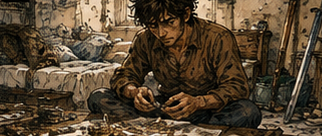
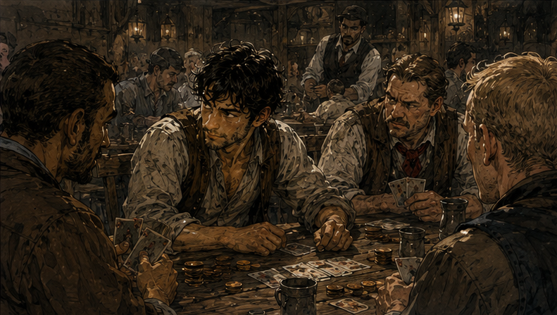
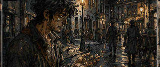

The first thing I did the next morning was count my money. The second thing I did was count it again because the number offended me. It did not improve. I sat on the edge of the bed with the coins spread across the blanket in little stacks and tried to remember when silver had become invisible to me. Not metaphorically. Literally. There had been a point in my old life when I stopped counting it. Somebody else handled expenses. Somebody else settled rooms, replaced gear, paid porters, bought supplies, tipped runners, bribed clerks, and quietly moved money around so Greg could continue being Greg without ever needing to wonder whether dinner cost four copper or six.
That arrangement had seemed efficient. Now it seemed suspiciously like being spoiled. I moved one silver from the left stack to the right. Training. Another. Food. Another. Pell. Another. Debt. I stopped. That was already more categories than coins.

"Excellent," I said.
The room did not object. The shale project had become the most dangerous kind of thing: promising. Failure would have been cleaner. If Pell had looked at the sixth disk and said no, useless, wrong, then the project could die with dignity. Instead we had a twenty-percent improvement, a path toward better tests, and no idea whether the final product would take two weeks or two years.
I had been treating it like short-term money because I wanted it to be short-term money. Pell could keep working if we slowed the pace. Antonius had financing rights for three months. Nothing about the project demanded that I bleed myself dry this week except impatience. I took a piece of paper and wrote:
ARWICK / SHALE. LONG TERM.
Under it:
DO NOT FEED IT ALL MY MONEY.
"Very sophisticated."
The problem was cash. Now.
I had spent most of yesterday feeling clever for identifying capital as the first bottleneck, then spent borrowed capital like I still had forty years of wealth behind me. Six silver here. Three there. Training. Delivery. Testing. Food. I remembered buying boots once for thirty gold because I liked the buckle. I looked down at my current boots. The left one had a crack near the toe.
"Different economy."
Same economy. Different Greg.
That annoyed me more. I opened the five-year plan. Mana conditioning three times a week. Better food because Hessa had said nutrition mattered. Guild access. Equipment. Teachers. Materials. Information. Every accelerated year had a price attached to it. I needed income that worked now, did not depend on precise future memory, and did not consume the money meant to build magic. I wrote: WHAT AM I GOOD AT?
My mind answered with careers instead of skills. Warrior. Mage. Investor. Merchant. Teacher. Gambler. Strategist. Each one immediately generated prerequisites, alternate routes, and reasons I could probably do it better this time. Within a minute I had turned earning dinner into a redesign of my life.
"Stop," I told myself. "Money. Today."
ACTUALLY GOOD AT.
That narrowed things. Fighting? I looked at the sword. Sixty-year-old Greg understood timing, distance, fear, and the hundred ugly ways fights went wrong. Nineteen-year-old Greg still had nineteen-year-old speed, strength, conditioning, and habits. I could probably embarrass another Bronze warrior. That was not the same as being worth money. I wrote:
FIGHTING. BETTER THAN I LOOK. NOT SPECIAL.
Strategy? Yes. For whom? I had no party, command, or reputation. No one was paying a nineteen-year-old Bronze adventurer to redesign a campaign. I wrote:
STRATEGY. USELESS WITHOUT PIECES.
That one hurt. Future knowledge? I stared at it. Yesterday I would have put it first. Today I wrote:
FUTURE KNOWLEDGE. BIG THINGS. BAD INDEX. EXPENSIVE TO VERIFY.
Also not immediate. Investing? I almost laughed. Investing required money. I wrote:
INVESTING. APPARENTLY REQUIRES MONEY.
Teaching? Maybe. Who would listen? Consulting? Worse. People-reading? I stopped. That one stayed. I was good at people. Not morally. Technically. Faces. Posture. Breathing. The pause before a lie. The difference between fear and caution. Who needed to feel clever. Who needed to feel safe. Which insult would make a fighter reckless. I had built half a career on that before admitting it was a skill.
Magic had eventually made the reading measurable. Reinforcement exposed tension and fatigue. Barriers told me where someone expected force. But I had been reading people long before magic. Probably before I knew I was doing it. I wrote:
PEOPLE. GOOD.
Then underneath:
TOO GOOD?
That was not useful financially. Unless I gambled. The thought arrived so cleanly I distrusted it. I leaned back. Cards. Dice. Tables. Not pure games of chance. Not the stupid ones. Anything with betting decisions, bluffing, hidden information, player behavior. I had played constantly in my old life. Not professionally. Socially. Expeditions were boring. Sieges were worse. Give twelve adventurers three weeks in a fortress and eventually somebody invented a drinking game, a card table, or a reason to hate whoever packed the dice. I had been good. Very good. How good? I frowned. That was exactly the kind of memory I had learned to question. I remembered winning. People remember winning.
I remembered other people complaining. Also not evidence. I remembered being banned from a table in Hareth because the owner believed I was cheating. That was better. Had I been cheating? Not mechanically. I had known when the owner was bluffing. He considered that cheating because the distinction cost him money. I smiled.
"Okay."
There was a gambling room near the slaughter lane. Antonius's room. That was bad. Maybe useful. Too visible. If I started winning money under my lender's roof, Antonius would notice exactly how I was paying him. Then again, Antonius already thought I was interesting. More interesting was not necessarily better. I needed a different room. Carrow had several. I knew that because nineteen-year-old Greg had been in most of them. That memory came back with enough detail to be embarrassing. The Broken Pike.
Closed after a stabbing. Still open now? Probably. The Copper Nail. Too small. The White Dog. I stopped. I could see the table arrangement. Or thought I could. I remembered losing a boot there. Why? Bet. Of course. Young Greg had apparently been an idiot with continuity. I stood. Then sat down again. Money first. How much could I afford to lose? Old Greg would have asked how much he could deploy. Different language. Different survival rate. I separated food, training, and debt reserve, then stared at what remained. A few silver. Enough that losing it would hurt, not enough that a modest win solved much. Which meant I immediately wanted to risk all of it. There he was.
Greg. I took half. Put the rest away. Then took one more coin. Put it back.
Progress.
The White Dog existed. That was the first win. The second was that nobody there knew me. At least nobody important. I entered slowly enough to let the room explain itself. Six tables. Three active. One dice game. Two cards. The air smelled like beer, tallow, wet wool, and the particular anxiety of people pretending money was entertainment. I liked it immediately. That was probably another character flaw. A woman at the nearest table looked up. Did I know her?
Name? No idea. Future importance? Nothing. Good. I scanned the others anyway. Old man with red nose. Young laborer with scarred knuckles. Merchant apprentice trying too hard to look bored. Two women in dock coats. A man in guild leathers with a silver clasp. Silver rank?
Decorative clasp. Why did I know that? Because he kept touching it. Pride object. Not rank. I filed him. The dealer at the card table was missing the tip of one ear. Memory tugged. Nothing followed. I stood there too long.
"Playing?" the dealer asked.
"I was deciding."
"About?"
"Whether you're honest."
The table laughed. The dealer did not.
"Sit down."
I sat. Three-card draw. Simple. Too simple. Good. I bought in small. The first hand I lost. Deliberately? That would have been smarter. I simply had bad cards. Important distinction. The second hand I folded too late because I mistook the merchant apprentice's nervousness for weakness. He had an excellent hand. I paid for the lesson.
I watched him. He was nervous because he had an excellent hand, not because he was bluffing. Knowing the principle was not knowing the man. Third hand. Dock-coat woman tapped one finger when she wanted someone to raise. Fourth. Red-nose exhaled through his nose before lying. Fifth. Guild-leathers touched his fake silver clasp when he wanted to look confident. I lost two. Won one. Folded three. The dealer watched me watching.
"First time?" he asked.
"Today?"
"Here."
"Yes."
"You stare."
"So I've been told."
"Bad habit."
"Depends."
He dealt. I picked up the cards. Mediocre. Not useless. The merchant apprentice looked at his hand and went still. Very still. Good hand. Red-nose scratched his cheek. Nothing. Dock coat checked the pot before checking anyone else. Interested. Fake Silver touched the clasp. There. Weak. I raised. Merchant apprentice called. Dock coat called. Fake Silver hesitated, then called because pride had entered the hand. Red-nose folded. Next card. Merchant apprentice blinked once. Better. Dock coat relaxed. Worse. Fake Silver touched the clasp again. Still weak. I had not improved. I raised anyway. Not because my cards deserved it.
Because two players wanted permission to leave and one wanted to prove he could stay. Dock coat folded. Fake Silver called. Of course. The merchant apprentice raised me. There was the problem. Good hand. Very good. I looked at him. He was trying not to breathe. I could beat Fake Silver. Not him. I folded. Fake Silver did not. The merchant apprentice took the pot. Fake Silver swore. I smiled, not because I won, but because the room had become legible. I stayed three hours. I did not win every hand. The others were not stupid. I just stopped making expensive mistakes quickly.
The patterns changed as people changed. Red-nose's tell shifted after drinking. Dock Coat got reckless when behind. Merchant Apprentice protected profit. Fake Silver could be pushed by disrespect. I used that once.

"Too rich for you?" he asked when I folded.
"Too boring." He stayed in the next hand three raises longer than he should have.
Ugly. Effective.
I won. The feeling was familiar. Not the money. The steering. That little shift where another person thought they were making a decision and I knew which pressure had nudged it. Old Greg had called it support when the outcome was heroic, strategy when it was political, negotiation when money moved, flirting when clothes came off. Read the person. Find the lever. Apply pressure. Fake Silver was stacking fewer coins than he had arrived with. Angry at me? At himself. Better. If he blamed me, he might leave. If he blamed himself, he would stay and try to repair the story.
I disliked how natural that thought felt. I used it anyway. By the end of the third hour, I had nearly tripled the money I brought. Training. Food. Interest. A week, maybe two. My chest tightened with something dangerously close to offense. I had once tipped more after dinner. Now this changed whether I could train next week. My calibration was wrong. Silver was not background noise anymore. Silver was time.
The realization should have made me conservative. Instead it made me want more. Of course it did. There was a higher-stakes table in the back, deliberately ignored when I entered. Better clothes. More money. One empty chair. I could buy in now. Barely. If I lost, I would walk out with less than I started. If I won. There it was again.
I stood. Not toward the door. Toward the back table. The game was Crown and Knives. That was more complicated. Good. Hidden cards. Shared cards. Betting rounds. Enough structure that observation mattered more. A man with silver rings looked up.
"Seat's expensive."
"How expensive?"
He named the buy-in. I had it. I should leave. Food secured. Training secured. Debt safer. Leave. I sat down. Apparently forty years of surviving my own decisions had taught me many things except how to stop at enough. The first hour went badly. These players lied with intention. They manufactured tells. One woman touched her necklace when bluffing for three hands, then used the same motion with a real hand to punish anyone who had noticed. I paid for that. A thin man named Osric talked constantly. I assumed distraction. Wrong. He talked more when thinking because silence made him uncomfortable.
The information was in when he stopped. I learned that after losing another hand. My stack shrank. I felt irritation. Then something worse. Excitement.
Good players. Finally.
That thought belonged to old Greg too. The room sharpened. I stopped trying to win money and started trying to understand them. Osric's silences. Necklace woman's false tells layered over real ones. Ring man's habit of staring at the player he wanted to challenge. Fourth player, older woman named Senna, had almost nothing visible. I watched her too hard. She noticed.
"You planning to marry me?" Senna asked.
"Not yet."
"Then stop looking at me like that."
"I'm learning."
"Learn quieter."
The table laughed. I smiled. She did not.
Senna was the best player. Present-important, not future-important. I watched her hands. Nothing. Breathing. Nothing. Eyes. Minimal. Bet sizing. There. Not a tell. A preference. She hated inefficient bets. When somebody distorted a small pot with an irrational raise, she became more conservative even with good hands. Not fear, disgust. She disliked bad structure. I tested it and lost. Wrong. She had known I was testing. Her eyes flicked to me afterward. Tiny smile. Oh. I liked her. Dangerous in a completely different way.
"Again," I said.
By midnight I had recovered the losses and pushed slightly above my first-table winnings. Enough. The cards had priced something I could actually sell now: attention. Fast models of specific people. No future knowledge. No expert needed to verify me. Just a buy-in and a room full of decisions.
I stood. This time toward the door. Senna looked up.
"Running?"
"Stopping."
"Different?"
"For me? Apparently." She glanced at my stack.
"You came in small."
"Yes."
"You leave small." I looked at the coins. Old calibration rose again. Small. She was right. And wrong.
"Not to me," I said.
Outside, the night air felt colder. I walked home with the coins heavy in my pocket. A few silver. Nothing to old Greg. Training, food, and time to this one. Both calibrations were still in my head.

Worse, I could already see the next leverage. If I could make this much reliably, how fast could I clear Antonius? Two nights? Three? Bad question. How fast could I clear Antonius while still funding Hessa? Better.
And did I actually want to clear him? Debt was risk. Interest was waste. Freedom mattered. Antonius was also access, capital, information, a future institution still small enough to talk to. Maybe I should repay enough to prove myself, then borrow again. Larger. Gambling for living and training. Borrowed money for high-upside projects.
That sounded excellent until I remembered why I was gambling in the first place: my first high-upside project had nearly eaten the rest of my money.
"Right."
Present Greg needed rules. Old Greg preferred judgment. Rules were what you gave people whose judgment you did not trust. Apparently I qualified. At the room, I wrote:
1. FOOD / ROOM / TRAINING MONEY DOES NOT GET INVESTED.
2. BORROWED MONEY GETS A PURPOSE BEFORE I BORROW IT.
3. FUTURE MEMORY IS A LEAD, NOT PROOF.
4. LEAVE THE TABLE WHEN THE DAY IS SOLVED.
I stared at number four. Then added:
5. ACTUALLY LEAVE.
Under that I wrote: WHAT AM I GOOD AT? PEOPLE. LEARNING PEOPLE. THINKING IN SYSTEMS. MAYBE GAMBLING. I paused, then crossed out MAYBE.
GAMBLING.
That one had earned its place. I counted the money again. Not enough. Real. Tomorrow I could do this again without asking history to cooperate. I lay down. Then sat up again. One more thought. If I was this good at reading gamblers, what else had I been reading all my life without calling it a skill? Parties. Guild clerks. Merchants. Lovers. Enemies. Audiences. The word audiences sat there longer than the others. I did not know why. Not yet. I wrote it down anyway.